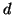
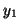
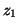
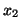
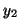
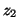

Next: Constant angle between three
Up: Constrained minimisation
Previous: Linear constraines
Contents
Another simple (but nonlinear) constraint which has been implemented
is to keep a distance,

, between two atoms constant. If, say,
atoms 1 and 2 are involved, then the  component of the first atom
specified in the input (section 8.8) is considered
as redundant. It is expressed via other coordinates as follows:
component of the first atom
specified in the input (section 8.8) is considered
as redundant. It is expressed via other coordinates as follows:
where two choices of the sign are possible. The correction to the
``force'' associated with nonredundand coordinates 
, 
and 
, 
, 
is calculated correspondingly.
Lev Kantorovich
2005-08-04